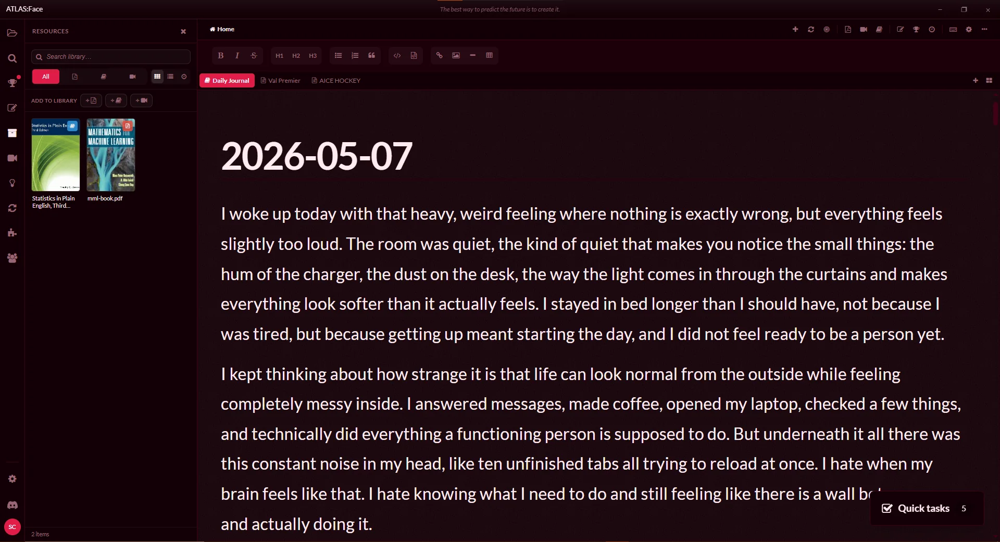
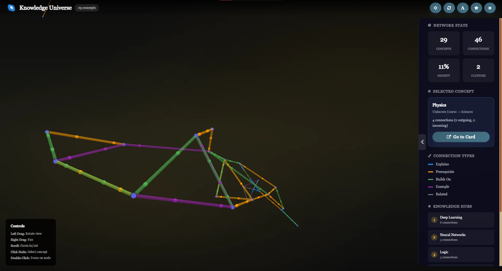
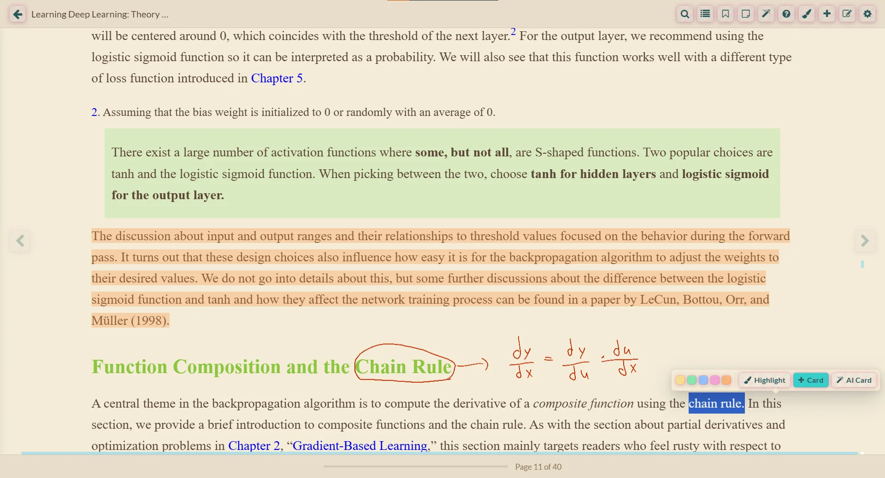
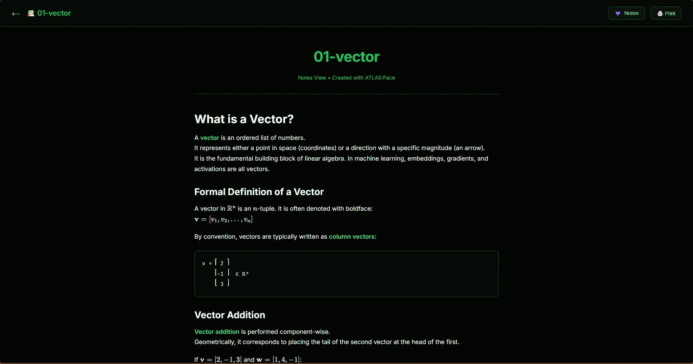

Join Discord first
Join Discord
Join the server so you know where verification and Founder roles live.
Drop in PDFs, EPUBs, videos, and notes. ATLAS:Face connects your reading, active recall, spatial cards, and 3D maps into a living body of knowledge you actually own.

No scattered browser tabs, no proprietary locks. Everything you read, sketch, and learn stays in sync in one desktop application.
Transform isolated documents into a living neural web. Connect books, notes, topics, and flashcards into an interactive map that helps you instantly locate missing links and revisit past insights.

Read textbooks, research papers, and books directly inside the workspace. Extract highlights directly into flashcards or notebook margin notes without switching applications.

Write, sketch, and diagram freehand alongside your reading material. Combine typed markdown with fluid handwriting for complex concepts that text alone cannot capture.
Arrange flashcards on a spatial workspace, test your retention, and converse with an AI assistant trained directly on your selected study sources.
Stop watching videos passively. ATLAS:Face inspects transcripts in real time to generate comprehension checks, key takeaway summaries, and quiz questions as you watch.
Turn any topic, synthesis, or document into a clean, publishable web page. Share your research with colleagues or students without leaving your desktop app.

Engineered for depth, speed, and long-term retention.
Your notes, PDFs, and data stay on your device file system. Complete control, zero lock-in, and offline reliability.
Built-in review scheduling ensures what you learn today stays accessible in long-term memory months from now.
Generate practice tests automatically from selected topics to test your comprehension under exam-like conditions.
Extend ATLAS:Face with custom plugins, community-created study packs, and specialized research tools.
Organize daily study goals, track review streaks, and maintain steady momentum across long-term research projects.
No paywalls for core learning tools. The application is completely free to use on desktop forever.
The app is 100% free and local-first. Founder membership is an optional way to support development, gain private Discord access, vote on roadmap priorities, and test experimental builds.
Start building your personal knowledge system today. Available for Windows, macOS, and Linux.